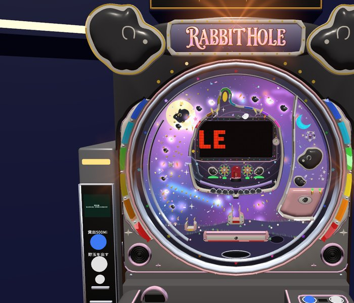
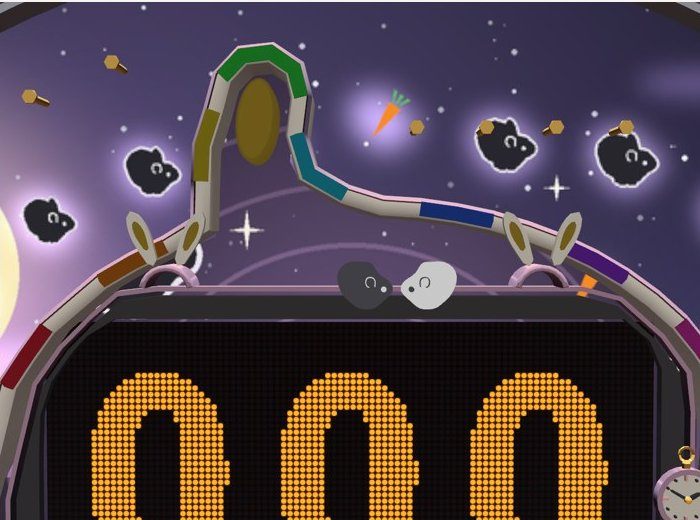
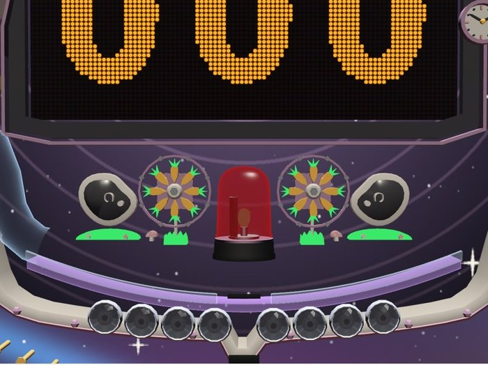
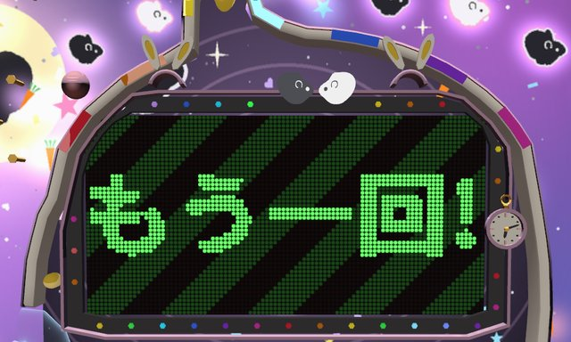
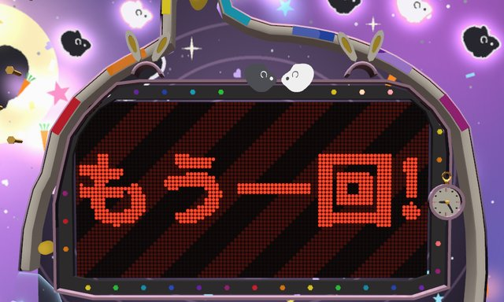
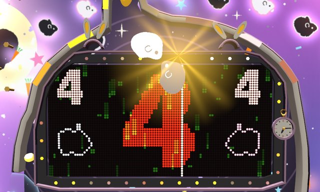
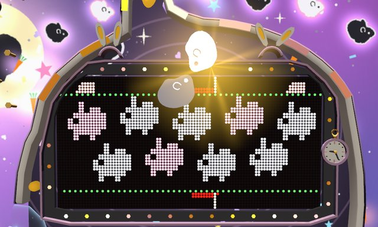
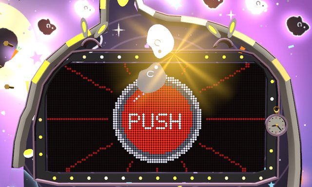
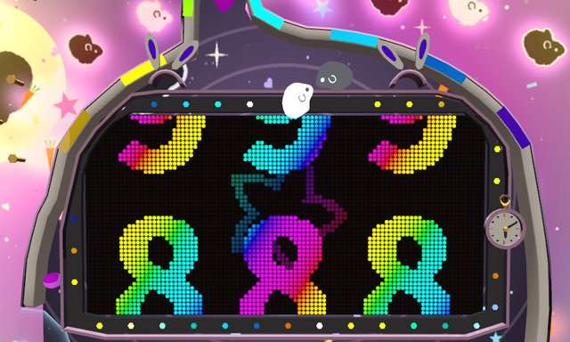
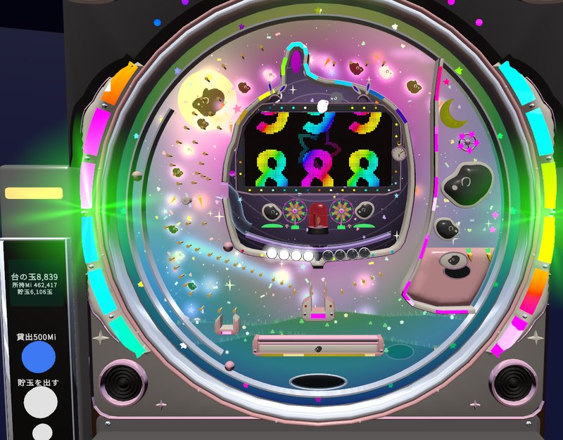

Last modified: 2026-11-26 (Thu)
RABBIT HOLE

Every jackpot goes into a 10-spin ST (a kakuhen that lasts a set number of spins). Left-shooting only. Four units at the east end of the island, two on the front and two on the back.
Contents
Specs
| Jackpot odds | 1/99.0 |
|---|---|
| In ST | 1/9.0 |
| ST | 10 spins (every jackpot goes to ST) |
| Continuation | About 69% |
| Rounds | 8R / 3R (10 counts per round) |
| Balls out | 8R about 880 / 3R about 330 |
| Payout | Heso 3 / den-chu 3 / attacker 11 / side pockets 4 |
| Payback | About 141% (estimate) |
* Border: still being checked.
Jackpot split
| 8R (ST) | 3R (ST) | |
|---|---|---|
| Heso | 15% | 85% |
| Den-chu | 25% | 75% |
How to shoot
- Left-shooting all the way. The right side of the board is decoration, and there's no right-shooting
- The heso (start pocket) doubles as the den-chu (electric tulip). Balls go in more easily when the ear-shaped wings open
- There's no through gate. 55% of the balls you shoot become futo holds
| Normal | In ST | |
|---|---|---|
| Futo hit | 1/16 | 9/10 |
| Futo spin | 12 s | 0.6 s |
| Wings open | 0.15 s x1 | 4.0 s x2 |
Board and gimmicks
Bunny ears and a spinning black and white rabbit above the screen. Carrot windmills and the patlamp below it.


ST (Rabbit RUSH)
- After a jackpot you get 10 spins of ST (1/9.0). Hit within those 10 and you get another ST. Miss them all and it's back to normal
- Going in shows "ラビットRUSH!" (Rabbit RUSH!)
- During ST, pink and white light runs around the screen frame and the spins left show on the top edge, with a countdown from 5


Reliability tables
* Reliability is how often it turns into a jackpot when that effect shows up (analysis value, normal mode). 50% and up, and guaranteed effects, are in red.
Hold color
| Color | Reliability |
|---|---|
| Blue | 1.7% |
| Green | 6.8% |
| Red | 30.5% |
| Gold | 63.6% |
| Rainbow | Guaranteed |
Reach
| Effect | Reliability |
|---|---|
| Normal reach | 3.1% |
| Super reach | 25.0% |
| Full rotation | Guaranteed |
| Final battle (PUSH) | 51.0% |
Notices
| Color | Carrot Balloon | Rabbit Herd |
|---|---|---|
| Any color | 1.3% | 18.0% |
| White | 0.2% | 3.4% |
| Blue | 0.6% | 9.9% |
| Green | 1.7% | 22.7% |
| Red | 6.1% | 52.3% |
| Gold | 22.9% | 83.5% |
| Rainbow | Guaranteed | Guaranteed |
Step-up notice
| Effect | Reliability |
|---|---|
| Up to step 1 | 4.2% |
| Up to step 2 | 10.3% |
| Up to step 3 | 33.8% |
| Up to step 4 | 66.7% |
| Up to step 5 | 91.0% |
Gijiren (pseudo re-spin)
| Effect | Reliability |
|---|---|
| ×2 | 5.8% |
| ×3 | 28.5% |
| ×4 | 50.8% |
Spin start
| Effect | Reliability |
|---|---|
| Pause | 1.5% |
| Reverse spin | 3.9% |
| Shake | 13.0% |
| One reel at a time | 22.6% |
| Flash | 48.6% |
| Drop | 1.8% |
| Suck-in | 2.1% |
| From the right | 10.6% |
| Character pushes | 41.1% |
Reel style
| Effect | Reliability |
|---|---|
| Upside down | 1.3% |
| Page flip | 5.6% |
| Drum | 8.3% |
| Shuffle | 15.6% |
| Hop | 0.7% |
Omens (characters running along the top)
| Effect | Reliability |
|---|---|
| Friends (3) | 1.1% |
| Big parade (6) | 2.5% |
| Gold | 12.6% |
| Rainbow | 65.6% |
Notices during a reach
| Effect | Reliability |
|---|---|
| Carrot Balloon | 14.5% |
| Rabbit Herd | 29.8% |
Super reach, second half
| Effect | Reliability |
|---|---|
| Frame by frame | 10.9% |
| Repaint | 19.5% |
| Push-off | 47.4% |
| Attack | 35.2% |
| Chase | 26.9% |
| Drill | 62.3% |
| Countdown | 15.1% |
Normal reach style
| Effect | Reliability |
|---|---|
| Standard | 2.3% |
| Zoom | 3.9% |
| Reverse spin | 3.1% |
| Bounce | 3.5% |
How the reach ends
| Effect | Reliability |
|---|---|
| Dead stop | 6.4% |
| Slide | 18.5% |
| Step back | 21.4% |
| Wobble | 9.2% |
| Last-instant stop | 29.0% |
Chance pattern
| Effect | Reliability |
|---|---|
| 311 (a later hold is a hit) | 68.7% |
Guaranteed effects
Rainbow hold, blackout, patlamp at spin start, revival, freeze, all lights out, rabbit walking backwards
Rabbit walking backwards: during a normal reach, the rabbits on the top strip walk backwards.
Effects guide
Numbers
The numbers are puffy and pink. The usual reel style is "hop": the numbers jump and swap.
Holds
The hold lamps are below the display. Gold and up is gekiatsu, rainbow is guaranteed.

Notices
Carrot Balloon is the weak notice and Rabbit Herd the hot one. 6 colors. Rabbit Herd red and up is gekiatsu, rainbow is guaranteed.


Step-up
One more rabbit joins the top strip each step. Step 4 drops a shutter, and step 5 turns the numbers rainbow.


Gijiren
The reels stop on a run of numbers, hold for a beat, then "もう一回!" (One more!) spins them again. The text goes green, red, then gold.





How a super reach plays out



Final battle and PUSH
In the final battle, press the PUSH button that appears in front of the dot display.



Premiums, hidden features and trivia
* Spoilers. Click to open
Premiums (guaranteed jackpot)
| Effect | What happens |
|---|---|
| Rabbit walks backwards | During a normal reach, the rabbits on the top strip walk backwards |
| Blackout | A long blackout at spin start, then straight into full rotation |
| Freeze | Everything stops and goes silent the moment the spin starts, then a flash and straight into full rotation |
| All lights out | The screen and cabinet lights all go dark and silent, then a flash and straight into full rotation |
| Patlamp at spin start | The patlamp spins right at the start of the spin |
| Rainbow | Rainbow hold, rainbow notice (Carrot Balloon / Rabbit Herd) |
| Full rotation | Only comes after a blackout, freeze or all lights out. Lines up 333 or 777. Spins to the very end and stops in rainbow |
| Revival | Fakes a miss on a super, then hits |


Hidden features
- 8R upgrade: at the end of a 3R jackpot, "昇格チャンス" (Upgrade Chance) appears and a roulette flips between 3R and 8R. Stop on 8R and it's upgraded. 60% of 8R jackpots show up as 3R first and then upgrade. 25% of real 3R jackpots try the upgrade and fail
- Hold sakiyomi (look-ahead): a hold can show one or two colors below its real color when it goes in. It moves up one step at a time while it waits, and whatever is left goes up as a chance-up at spin start. If a white hold just flickers at spin start, that's a gase (fake-out)
- Chance Zone: a look-ahead zone that appears when 2 or more holds are queued ahead. On a miss it only shows up when that spin turns into a super reach
Trivia
- Chance pattern 311: a no-reach miss that stops on 311 flashes gold and bounces. It never stops on 311 by coincidence
- No notices, step-ups, gijiren or spin-start effects during ST
Data counter

On top of the machine: jackpots, streak, starts, last time and how many people are in the parlor.